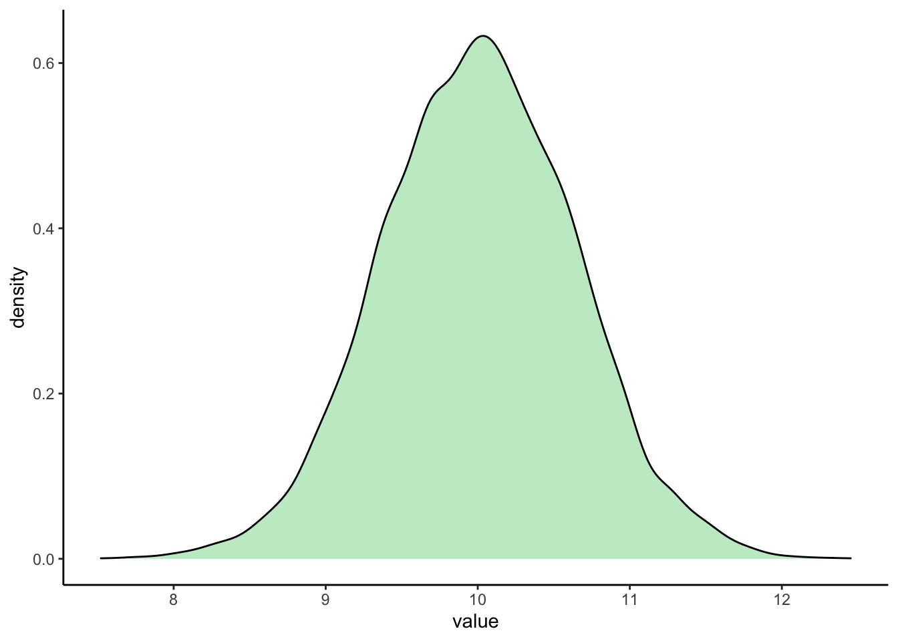
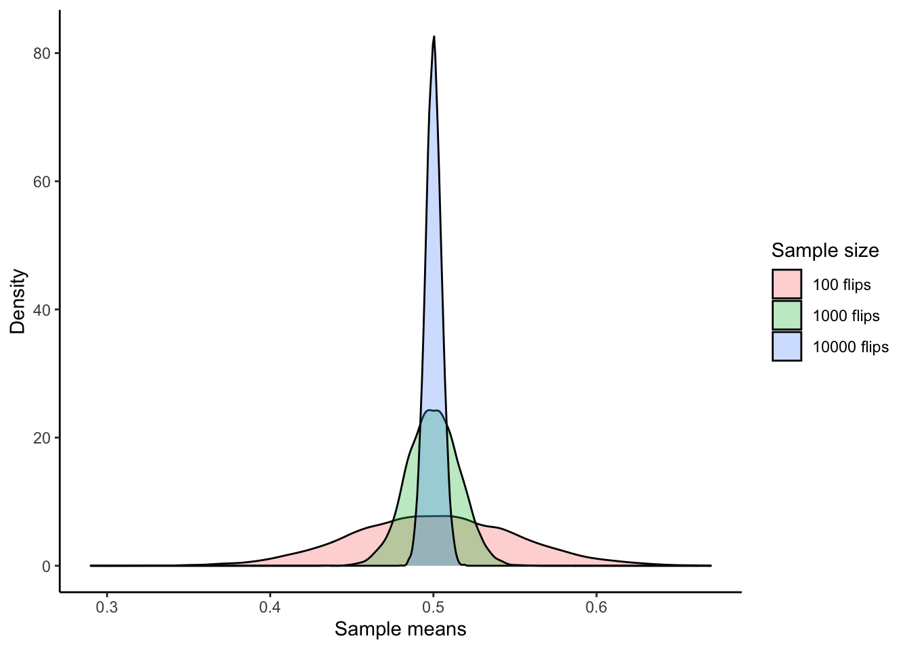
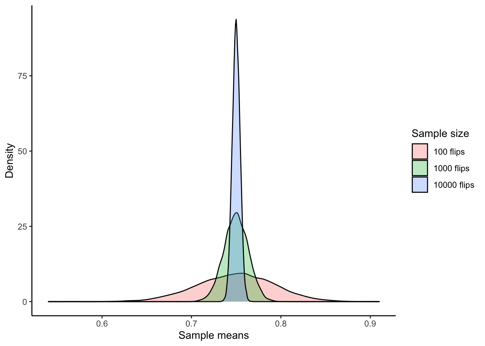

6 Central limit theorem
In this chapter, we will investigate the intuition behind the Central Limit Theorem (CLT). In short, the CLT states that if you have a bunch of samples and plotted the distribution of means (not individual observations!), the distribution would look normal regardless of the population distribution. This theorem is incredibly powerful, and we will explore how it applies to data analysis in future chapters.
6.1 CLT for means
6.1.1 CLT Part 1
As always, let’s load the tidyverse.
library(tidyverse)Many observed quantities follow normal distribution. Imagine we have a population following normal distribution that has a mean of 10 and standard deviation of 2. If we draw samples from it, are we able to estimate its mean?
In this example, we will use rnorm(), a random number generator for this simulation. Here, rnorm() returns a vector of random numbers from a normal distribution.
(samp10 <- rnorm(n=10, mean=10, sd=2))## [1] 9.941859 9.116110 11.028259 13.731067 6.990441 9.300722 6.870166
## [8] 14.083796 9.081908 12.050538mean(samp10)## [1] 10.21949Apparently the mean is not 10, but it is pretty close. This should make sense; when we draw a sample to estimate the mean, we may get very close to the desired “true mean,” but we also expect some error. What if I repeat the estimation 10000 times with 10 samples?
means10 <- as.vector(NA)
# doing experiments 10,000 times
for (i in 1:10000) {
# each iteration, I draw a sample size of 2 from a normal distribution
samp10 <- rnorm(10, mean=10, sd=2)
# I calculate the mean of these 10 numbers and record it
means10[i] <- mean(samp10)
}
# let's look at the result
ggplot(as_tibble(means10), aes(value)) +
geom_density(fill="#C5EBCB") +
theme_classic()
What does this figure mean? Of the 10000 estimations that we did, most estimations were very close to 10. The probability to overestimate and underestimate decreases as the estimation deviates from 10, our “true mean.”
We can now conclude the following: if our population is normal, our sampling distribution is also normal. This first observation demonstrates a key part of the CLT.
6.1.2 CLT Part 2
Now, we are going to explore another aspect of the CLT: given enough sample means, our sample distribution will look normal regardless of the original population distribution. This time, let’s try sampling from a population that is uniformly distributed. For example, let’s create a population with 10,000 completely random numbers between 0 and 20:
uniform_popn <- runif(n=10000, min=0, max=20)
ggplot(as_tibble(uniform_popn), aes(value)) +
geom_density(fill="#C5EBCB") +
theme_classic()Now, we are going to repeatedly sample from uniform_popn and use the mean of that particular sample as our entry.
means10 <- as.vector(NA)
means100 <- as.vector(NA)
means1000 <- as.vector(NA)
# doing experiments 10,000 times
for (i in 1:10000) {
# each iteration, I draw 10, 100, and 1000 samples from uniform_popn
samp10 <- sample(uniform_popn, size = 10, replace = TRUE)
samp100 <- sample(uniform_popn, size = 100, replace = TRUE)
samp1000 <- sample(uniform_popn, size = 1000, replace = TRUE)
# getting means of each sample
means10[i] <- mean(samp10)
means100[i] <- mean(samp100)
means1000[i] <- mean(samp1000)
}
df <- rbind(
data.frame(means = means10, sample_size = "10"),
data.frame(means = means100, sample_size = "100"),
data.frame(means = means1000, sample_size = "1000")
)
ggplot(df, aes(x = means, fill = sample_size)) +
geom_density(alpha = 0.3) +
labs(x = "Sample means", y = "Density", fill = "Sample size") +
theme_classic()
Notice two things:
- With a larger sample size, your estimation for the mean will have a smaller variance.
- Even though our original population was uniform (i.e., NOT normal), our sampling distribution looks normal. In fact, any population distribution will look normal given enough sample means. This observation is captured by the CLT.
Pretty cool, right?
6.2 CLT for proportions
Now I would like to estimate the probability of getting a “head” of when I flip a coin.
Each time I flip a coin, if I end up with a “head,” I record it as a 1. If I get a “tail,” I will record it as a 0. If I flip the coin for 10 times where I have 6 “heads” and 4 “tails,” the proportion of getting “heads” would be 6/10 = 0.6. If I flip the coin for a sufficiently large amount of times, we would like to expect the proportion to approach the theoretical 0.5. Is this the case?
means100 <- as.vector(NA)
means1000 <- as.vector(NA)
means10000 <- as.vector(NA)
for (i in 1:10000) {
sample100 <- sample(c(1,0), prob = c(0.5, 0.5), replace = TRUE, size = 100)
means100[i] <- mean(sample100)
sample1000 <- sample(c(1,0), prob = c(0.5, 0.5), replace = TRUE, size = 1000)
means1000[i] <- mean(sample1000)
sample10000 <- sample(c(1,0), prob = c(0.5, 0.5), replace = TRUE, size = 10000)
means10000[i] <- mean(sample10000)
}
df <- rbind(
data.frame(means = means100, sample_size = "100 flips"),
data.frame(means = means1000, sample_size = "1000 flips"),
data.frame(means = means10000, sample_size = "10000 flips")
)
ggplot(df, aes(x = means, fill = sample_size)) +
geom_density(alpha = 0.3) +
labs(x = "Sample means", y = "Density", fill = "Sample size") +
theme_classic()
Can you explain the pattern that we observe with 100 flips? How about the height and width of other curves? What conclusions can we draw?
The answers to these questions may appear intuitive: when you flip the coin many times, you will likely get “heads” 50% of the time. The more you flip the coin, the more likely you’ll get 50% heads. How about an “uneven” coin that preferably lands with a “head” with 75% chance? In this case we change the prob in the sample() function with this new probability.
means100 <- as.vector(NA)
means1000 <- as.vector(NA)
means10000 <- as.vector(NA)
for (i in 1:10000) {
sample100 <- sample(c(1,0), prob = c(0.75, 0.25), replace = TRUE, size = 100)
means100[i] <- mean(sample100)
sample1000 <- sample(c(1,0), prob = c(0.75, 0.25), replace = TRUE, size = 1000)
means1000[i] <- mean(sample1000)
sample10000 <- sample(c(1,0), prob = c(0.75, 0.25), replace = TRUE, size = 10000)
means10000[i] <- mean(sample10000)
}
df <- rbind(
data.frame(means = means100, sample_size = "100 flips"),
data.frame(means = means1000, sample_size = "1000 flips"),
data.frame(means = means10000, sample_size = "10000 flips")
)
library(ggplot2)
ggplot(df, aes(x = means, fill = sample_size)) +
geom_density(alpha = 0.3) +
labs(x = "Sample means", y = "Density", fill = "Sample size") +
theme_classic()
Indeed, the peaks converged again and shifted to the new position of 0.75.
As you can see, the bigger your sample size, the less variability there is, and the more the distribution looks like a normal distribution. More precisely, the bigger your sample size, the distribution of the sample means will be normally distributed, even if the population is not normally distributed. A good rule of “sufficiently large sample size” is n ≥ 30.
This example shows the power of the CLT—it allows us to predict a sampling distribution regardless of the original population.
NOTE: The CLT says NOTHING about the individual sample points themselves. Remember our original data data points are either 0 or 1. However, the mean is a continuous variable.